В программе GBS.Market есть несколько режимов работы, один из которых – "Кафе".
Режим работы "Кафе" предполагает использование кассовой программы в объектах общественного питания: кафе, ресторанах, кофейнях, булочных и других торговых точек подобного формата. Данный режим ориентирован на работу на сенсорных экранах, но позволяет взаимодействовать и с помощью мыши.
Внешний вид рабочего места официанта
Ниже показана основная форма режима "Кафе". Внешний вид может зависеть от настроек, которые доступны из меню главной формы: Файл – Настройки – Кафе.
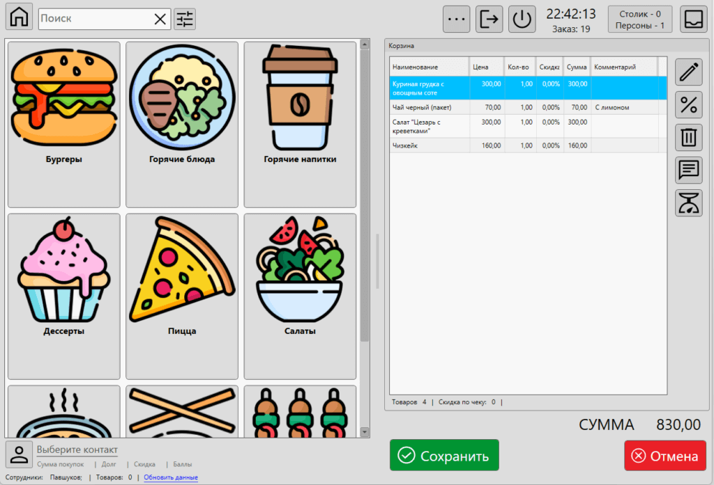
Основное окно, которое является рабочим кассовым местом официанта, условно можно разделить на несколько групп элементов:
- Меню блюд с поиском
- Панель контакта
- Корзина (чек, заказ)
- Кнопки управления
- Информационная строка
Рассмотрим эти группы подробнее.
Меню блюд с поиском
Меню содержит в себе перечень категорий и блюд (товаров), которые доступны для продажи.
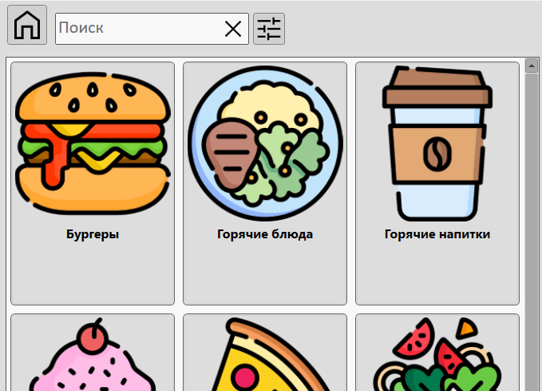
На скриншоте выше показано меню с поиском. В корневом разделе меню режима "Кафе" отображается верхний уровень категорий.
Кнопка "Домой"
Нажмите на кнопку, чтобы вернуться в корневой раздел меню.
Если в меню отображается список результатов поиска или блюда одной из категорий, то нажатие кнопки "домой" вернет меню в корневой раздел со списком категорий.
Поле поиска
Введите штрих, название товара или значение другого поля товара (блюда), чтобы в меню блюд отобразились результаты поиска по введенному запросу.
Поле поиска поддерживает поиск по весовым штрихкодам и идентификацию контактов.
Полезные материалы
Кнопка "Настройка поиска"
Нажатие кнопки раскрывает панель настройки поиска.
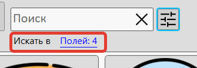
В панели доступен выбор полей, по которым будет происходить поиск блюд (товаров). Для поиска доступны:
- Наименование товара
- Основной штрихкод товара
- Описание товара
- Дополнительные штрихкоды
- Значения свойств дополнительных полей
Выберите те поля, по которым будет происходить поиск. Настройка всех свойств товара происходит в карточке товара
Полезные материалы
Меню категорий и блюд
В корневом разделе меню отображаются категории верхнего уровня. Настройка категорий блюд (товаров) происходит в списке категорий.
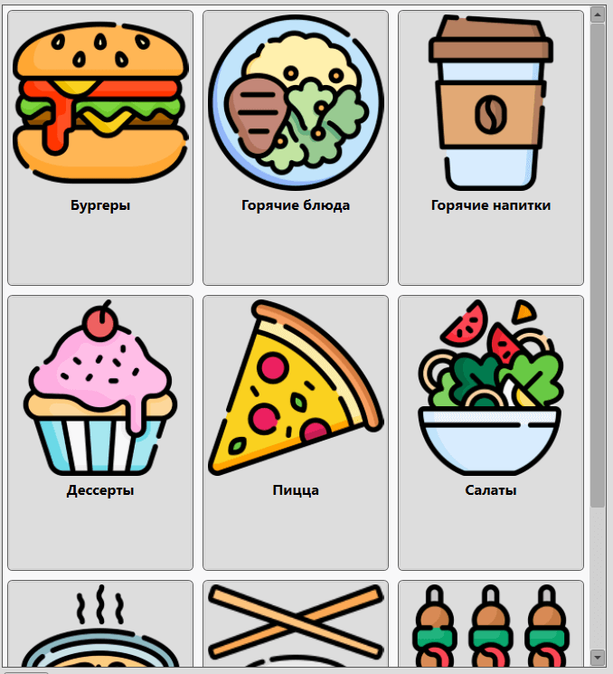
На скриншоте выше показаны категории блюд с установленными изображениями. Установить изображение к категории можно в карточке категории. Чтобы перейти к списку блюд (товаров), входящих в категорию – кликните на карточку категории.
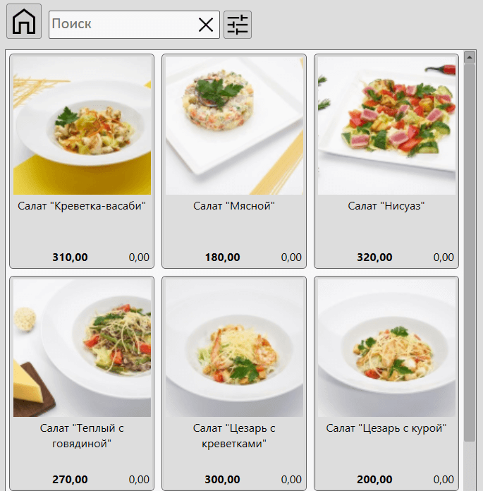
Выше показан список блюд (товаров), входящих в категорию "Салаты". Для карточки блюда в меню можно установить картинку или фотографию. Сделать это можно в карточке товара.
Карточка с товаром содержит название блюда, его стоимость и остаток. Отображение фотографий блюд, значения остатка и размер карточек могут быть указаны в настройках.
Клик на карточку блюда добавит его в список товаров текущего заказа (чека).
Панель контакта
Панель контакта позволяет выбрать посетителя (покупателя) и увидеть информацию о его сумме покупок, скидке, накопленных баллах и текущей задолженности.
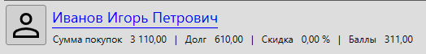
Отображение панели контакта можно включить в настройках: Файл – Настройки – Кафе
Кнопка выбора клиента
При нажатии на кнопку выбора контакта программа отобразит окно поиска контактов.
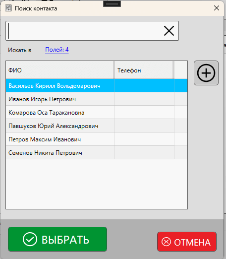
Найдите в списке необходимый контакт или добавьте новый. Завершив, нажмите "Выбрать".
Информация о контакте (покупателе)
После выбора контакта будет отображена информация о нем:
- ФИО
- Сумма ранее сделанных покупок
- Сумма задолженности
- Личная скидка
- Накопленные баллы
Ввод информации о контакте происходит в карточке контакта. Значения суммы покупок, задолженности баллов могут содержать информацию с нескольких торговых точек, если включена синхронизация контактов.
Полезные материалы
Корзина (текущий заказ)
Под "корзиной" подразумевается текущий открытый заказ (чек), который содержит в себе список блюд (товаров).
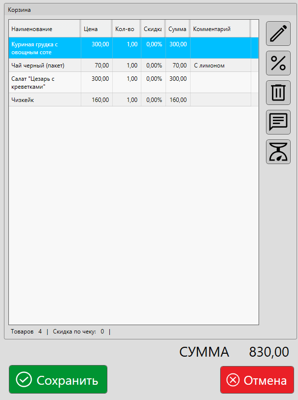
Выше показана корзина, в которую добавлено несколько позиций.
Список блюд (товаров)
В списке информация разделена на столбцы:
- Наименование – название блюда, товара
- Цена – цена за 1 единицу товара
- Кол-во – кол-во блюд
- Скидка – скидка на позицию в процентах
- Сумма – сумма позиции с учетом скидки и кол-ва
- Комментарий – комментарий к позиции
- Доп. поля – могут быть отображены значения дополнительных полей
Полезные материалы
Редактировать количество
Выберите в списке одну или несколько позиций и нажмите кнопку, чтобы изменить количество.
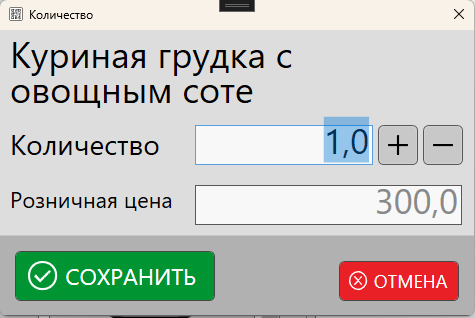
В форме ввода количества укажите необходимое значение и нажмите "Сохранить".
Для услуг и товаров со свободной ценой можно ввести значение розничной цены, по которой будет продан товар (блюдо). Выбрать тип товаров можно в карточке категории.
Изменить скидку
Выберите одну или несколько позиций и нажмите кнопку "Скидка", чтобы установить значение.
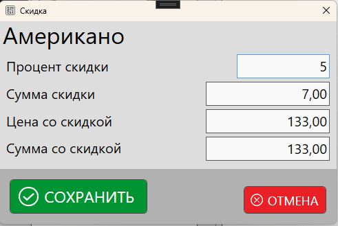
Полезные материалы
Удалить из списка
Выберите одну или несколько позиций, чтобы удалить их из чека. Программа запросит подтверждение на удаление выбранных блюд.
В настройках программы можно включить запрос причины удаления блюда из заказа, которую в последствии можно увидеть в истории действий.
Комментарий к блюду
Выберите одно блюдо в списке, чтобы указать или изменить комментарий к нему. Например:
- для чая можно указать комментарий "с лимоном"
- для шашлыка – без лука
- для пиццы – без оливок
- и т.п.
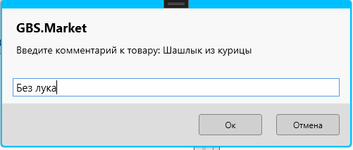
Комментарий к блюду будет отображен в списке активных заказов и может быть отображен в чеке, печатаемом на кухню.
Полезные материалы
Проверка веса
Если в настройках программы включена кнопка для проверки веса, то нажав на нее, можно увидеть значение веса на подключенных весах, без необходимости выбирать товар.
Например, это может быть полезно в случаях, когда покупатель просто просит взвесить какой-то товар, без явного желания его купить.
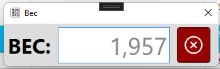
Полезные материалы
Итоговая строка
Итоговая строка содержит информацию:
- Товаров – кол-во товаров (блюд) в списке
- Скидка по чеку – общая скидка, предоставляемая по текущему заказу
Итоговая сумма
Итоговая сумма содержит в себе общую сумму всех позиций в чеке (заказе)
Кнопка "Сохранить"
Нажмите на кнопку, чтобы сохранить заказ. Откроется дополнительное окно для выбора дальнейших действий и ввода дополнительной информации.
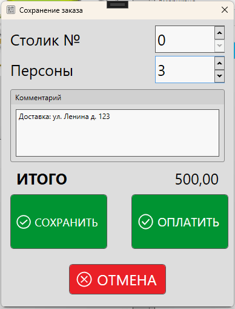
В форме сохранения заказа доступны элементы:
- Столик № – можно указать номер столика, за которым сидит посетитель
- Персоны – кол-во персон, обслуживаемых в рамках заказа
- Комментарий – заметка к заказу. Например, можно указать адрес, если заказ на доставку
- ИТОГО – общая сумма заказа
Отображение полей для номера столика и кол-ва персон может быть отключено в настройках.
Кнопка "Сохранить"
Заказ будет сохранен в список активных и может быть возвращен в последствии на главную форму. Корзина будет очищена.
Сохранение заказа без оплаты позволяет обслуживать клиентов в зале за столиками, когда происходит дозаказ блюд.
Кнопка "Оплатить"
При нажатии на кнопку "Оплатить" будет предложено выбор способов оплаты.
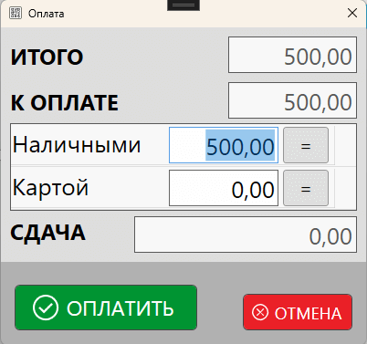
Заказ может быть оплачен сразу, без предварительного сохранения. Это позволяет обслуживать клиентов, например, в точках формата "кофе на вынос".
После оплаты заказ считается закрытым, по факту оплаты фиксируется продажа, которую можно увидеть в журнале продаж.
Полезные материалы
Блок управления
Блок управления содержит кнопки управления программой для режима "Кафе".
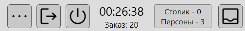
Кнопка "еще"
При нажатии на кнопку будет отображено меню с дополнительными действиями:
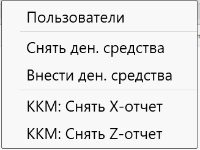
- Пользователи – отобразит форму входа/выхода сотрудников
- Снять ден. средства – снятие денежных средств
- Внести ден. средства – внесение денежных средств
- ККМ: Снять X-отчет – снятие отчета с кассы без гашения
- ККМ: Снять Z-отчет – снятие отчета и закрытие смены на ККМ
Полезные материалы
Выход из режима "Кафе"
Нажмите на кнопку, чтобы закрыть рабочее место официанта и выйти в главное окно программы.
Завершение работы программы
Нажмите на кнопку "Закрыть программу", чтобы завершить работу GBS.Market.
Будет отображено окно завершения работы с выбором вариантов.
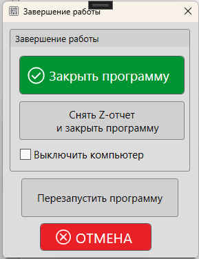
- Закрыть программу – завершает работу программы
- Снять Z-отчет и закрыть программу – выполняет закрытие смены на ККМ и завершает работу программы
- Опция "Выключить компьютер" – при включенной опции будет выключен ПК после закрытия программы
- Перезапустить программу – рестарт программы, например, для установки обновления
- Отмена – продолжение работы программы
Время и номер заказа
Блок отображает текущее время и номер текущего заказа.
Кнопка "Столики и персоны"
Если в настройках программы включена опция "столики и персоны", то кнопка будет отображаться в блоке управления.
При нажатии на кнопку будет открыта форма ввода информации о номере столика и количестве персон, обслуживаемых в рамках текущего заказа.
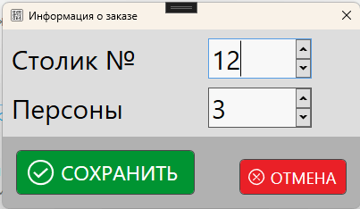
Введите необходимые значения и нажмите "Сохранить".
Кнопка "Активные заказы"
При нажатии на кнопку "Активные заказы" будет открыта форма управления заказами.
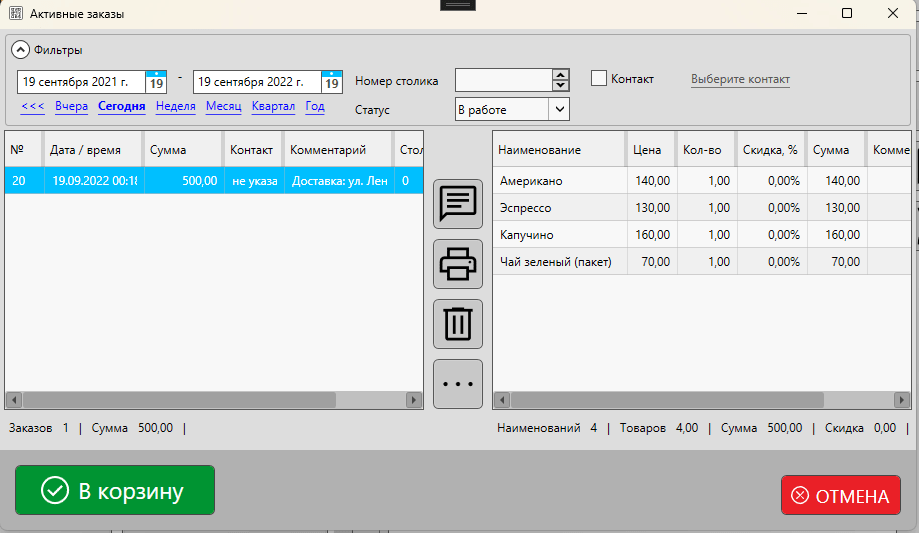
В форме активных заказов доступны действия:
- просмотр заказов
- поиск и фильтрация
- редактирование комментария к заказу
- печать пред. чека по заказу
- удаление заказов
- объединение заказов
- разделение заказа
- просмотр карточки продажи закрытого заказа
- возврат заказа в работу (в корзину)
Информационная строка
Информационная строка содержит дополнительную информацию при работе в режиме "Кафе".
- Сотрудники – список сотрудников, которые активны в настоящий момент
- Товаров – кол-во товаров (блюд) в выбранной категории или результатах поиска
- Обновить данные – обновление кэша меню блюд